Copywriters
Fiestas Patrias 2026
Se armó
el asado
Choripán · Terremoto · Juegos
en la casa de la Vale
Viernes 11 de septiembre
10:00 a 15:00 hrs
· James Joyce 1408, Vitacura

Ven con tu mejor
outfit dieciochero